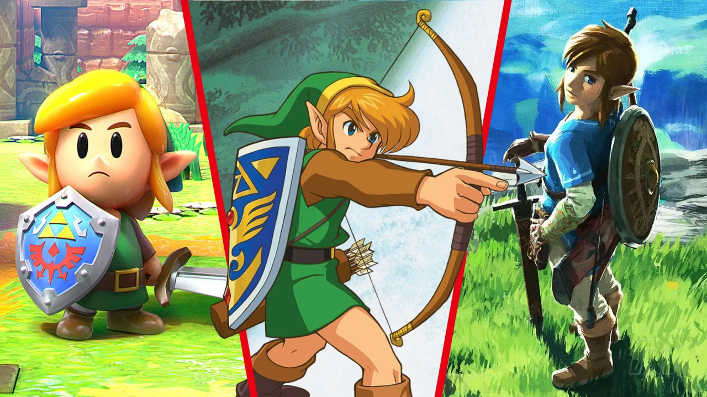
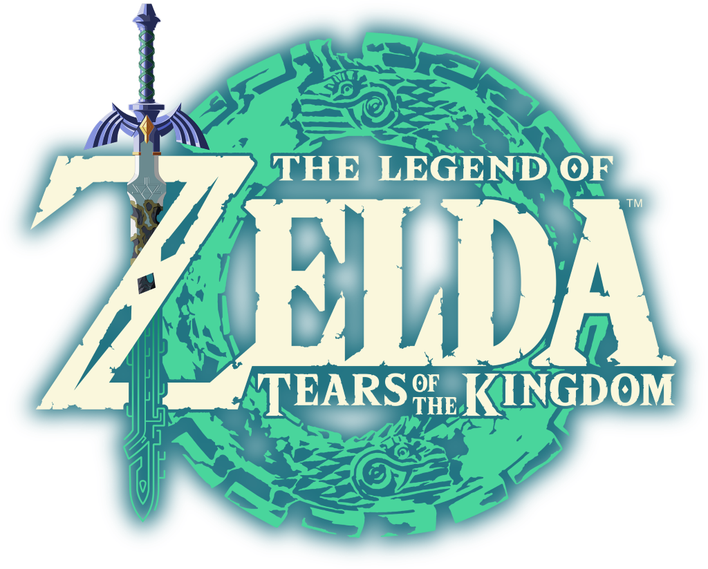

Nintendo's latest installment to The Legend of Zelda series
What is The Legend of Zelda?
The Legend of Zelda is an action-adventure videogame series set in the land of Hyrule. An adventurer, commonly named Link, is set on a quest to vanquish evil and to save princess Zelda. Through the course of the games, you fight monsters, solve puzzles, and collect useful items. The creator, Shigeru Miyamoto, was originally inspired to create The Legend of Zelda from his sense of curiosity and wonder exploring caves around his childhood home in Japan. The specifics of each games' story will differ, but the games star different incarnations of 3 primary characters: Link, Zelda, and Ganon.

Above showcase three different Incarnations of the protagonist, Link, across different Legend of Zelda games.
(From Left to Right: Link's Awakening, A Link to the Past, and Breath of the Wild)
What is Tears of the Kingdom?

Tears of the Kingdom is the latest game in The Legend of Zelda Series, and takes place in the same version of Hyrule as the last game: Breath of the Wild.
Both games may take place in the same world, and even share the same console and game engine. But the scope and polish of Tears of the Kingdom has been greatly improved. Tears of the Kingdom takes place a few years after the events of Breath of the Wild, and have you travelling across Hyrule once more. Only this time, massive and numerous sky islands have been upheaved from the surface, and a brand new underworld of Hyrule has been opened for Link to discover. It is up to Link to once again seal away a terrible evil that plagues the land, and find the princess, who has mysteriously vanished shortly after the beginning of the game.